前回までのメニュー
料理教室 スタジオ・クレエ の前回までのメニューを紹介します。
|
前回までのメニュー |
|||||
料理教室 スタジオ・クレエ の前回までのメニューを紹介します。 |
|||||
| 平成21年お正月用お節料理 | ||||||||
毎年恒例となっているお正月用「おせち料理」です。30日・31日の二日間特別レッスンを行いました。 今年は、洋風メニューが少し加わっています。ボリュームたっぷりのおいしいお節です！ |
||||||||
| 一の重 | ||||||||
数の子 車海老のうま煮 昆布巻き 黒豆 田作り かまぼこ 叩きごぼう |
||||||||
二の重 |
||||||||
煮しめ 椎茸うま煮 柿なます 栗きんとん 菊花蕪 |
||||||||
| 三の重 | ||||||||
ローストビーフ 鰤の照り焼き えびいもの含め煮 |
||||||||
| レクチャー | 真剣な眼差しでの調理実習 | |||||||
 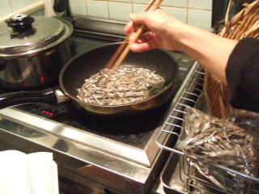 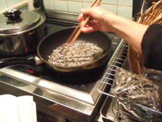 |
||||||||
| 前日に黒豆の仕込み 数の子の薄皮をとる | 昆布を巻く ごまめを揚げる | |||||||
| いもを蒸す 鰤の照り焼き | 出来上がった料理 お重詰め | |||||||
| 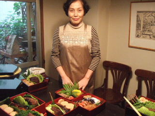 | ||||||||
| 作品と一緒に記念撮影 | 生徒さんの作品 | |||||||
| 12月 ファミリークリスマス | ||||||||
今年のクリスマス料理は、アメリカンスタイルのフライドチキン、ポテトスティックそしてコールスロー、マフィンです。スープは、今が旬のオイスターチャウダーです。 お持ち帰りは、チキンバスケットです。ちょっとしたクリスマスプレゼントにどうぞ！ |
||||||||
| チキンバスケット 試食会の盛り付け | ||||||||
| 出来上がり | 試食会は、ワインで乾杯！フライドチキンには赤ワイン、オイスターチャウダーにはシャルドネの白ワインがぴったりでした。 | |||||||
| １．フライドチキン （アメリカンスタイル） | ||||||||
鶏のもも肉を下漬け調味して、牛乳に漬け込みます。 両面とも、じっくりと心をこめて揚げるのがコツです。 パプリカ等のスパイスが効いた一味違うフライドチキンです。
|
||||||||
| 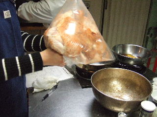 | ||||||||
| 一晩漬けたチキン スパイスをまぶす | 低温の油に入れる 両面に焦げ目 | |||||||
| ２．ポテトスティック | ||||||||
拍子切りにしたメークインをきつね色にパリッとするまで揚げます。 簡単ですが、フライドチキンのお供には欠かせません。 |
||||||||
| 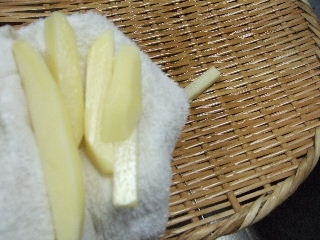 | ||||||||
| メークインを拍子切り 水気をしっかりふく | パリッとするまで揚げる | |||||||
| ３．コールスロー | ||||||||
キャベツ、人参、赤ピーマンのコールスローです。 マヨネーズソースでよく合わせます。 |
||||||||
 |
||||||||
| 野菜の下準備 細く千切り | ソースを合わせる | |||||||
| ４．かきのチャウダー | ||||||||
白ワインがよく合うオイスターチャウダーです。 かきの下ごしらえをしっかりしましょう。 とてもおいしかったです。 |
||||||||
| かきを一煮 ベーコン、オニオン炒める | 茹で汁で煮る 盛り付け | |||||||
| ５．マフィン | ||||||||
マフィン型で作るバターケーキです。 ケーキを作る時はいつも同じですが、楽しかったことなどをいろいろ思い出しながら、心をこめてしっかり混ぜましょう。 あとはオーブンに任せて、焼き上がりを待ちます。 マリアージュのマルコポーロでも飲みながら、くつろぎのひと時を楽しんで下さい。 |
||||||||
| バターを練る 粉、卵、生クリーム混ぜる | 型に入れる | |||||||
| １１月 生徒さんと旅した釜山より〜 | ||||||||
10月16〜18日に行なった海外特別授業”韓国（Busan、Daegu）観光とグルメ旅”にちなんで、今月は韓国料理です。 |
||||||||
| セッティングのレクチャー セッティング | ||||||||
| １． キムチの寄せ鍋 | ||||||||
下味をつけた豚肉とキムチのコンビネーションが抜群です。 ねぎ、きのこなどに下味用のたれをよく絡めながらじっくり炒めます。 韓国料理にはやっぱり”眞露（じんろ）”が似合います。 ロックで楽しみながら、試食しました！ |
||||||||
| 材料の下拵え 豆腐の両面を焼く 材料を鍋に入れる 鍋を整える | ||||||||
| ２． 松前漬け | ||||||||
| 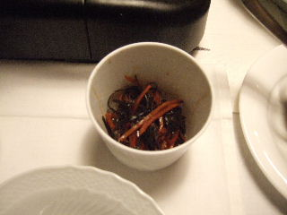 | 日高の細切昆布とするめの松前漬けです。 一人で静かに楽しむ夜半の水割りにもよく合いそうです！ 3日ほど漬けるとおいしい！ |
|||||||
| するめを洗う するめ、昆布を細切り 合える | ||||||||
| ３． ねぎのチヂミ風 | ||||||||
韓国といえば、やはりチヂミですね。 レシピでは、”万能ねぎ”でしたが、今回は先生が佐賀に行った時に”道の駅”でねぎと勘違いして調達された”わけぎ”を使いました。 先生から「結果的には、わけぎの方がおいしくて正解だったですね」とのコメントでした。とてもおいしかったです。 |
||||||||
 |
||||||||
| しじみを洗う 小麦粉をまぶす フライパンに並べ、とき玉 両面をよく焼く | ||||||||
| ４． ナシのコンポート | ||||||||
| 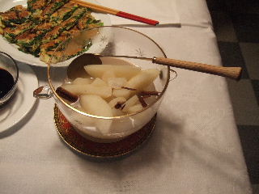 | 韓国では、かき、りんご、ナシなどがいっぱい売られていたとのことです。 今回は、ナシを使ったコンポートです。 冷蔵庫で冷やして食べるさっぱりしたデザートです。 |
|||||||
ナシを6等分 |
キョウニン、ケイヒ入りです。 | |||||||
| １０月 晩秋の料理 | ||||||||
| 今月の料理は、京風味を基本にした晩秋の料理です。秋の夜長を日本酒をお供に、素敵な和食を楽しみましょう！ | ||||||||
| 出来上がり 試食 | ||||||||
| １． 串 鍋 | ||||||||
気温の下がった晩秋の食卓は、やはり”鍋”ですネ。 鍋といっても今回は、”串鍋”です。 旬の魚（ぶり、かつお）をメインにして、大根、こんにゃく、わけぎ（今回は、九条ねぎ）などをきれいに盛り付けます。 鍋にはやっぱり日本酒です。”上善如水”を選びました。
|
||||||||
| 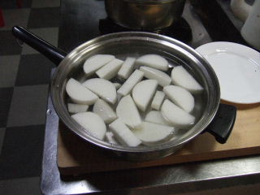 | ||||||||
| 大根を下煮 こんにゃくに串 ぶり霜ふり 鍋に並べる | ||||||||
| ２．オクラのすり流し | ||||||||
オクラを下茹でし、プロセッサーでペーストにして、とろろ昆布とだし汁で仕上げた吸い物です。 簡単ですが、色鮮やかなさっぱりした素敵な味です。 |
||||||||
| オクラを下茹で プロセッサーでペースト状 | ||||||||
| ３． 加茂茄子田楽 | ||||||||
京都加茂茄子の田楽です。 京赤味噌で作った田楽味噌で食します。 |
||||||||
 |
 |
|||||||
| ナスに切れ目 ナスを揚げる 田楽味噌を作る 出来上がり | ||||||||
| ４． 白菜のもみ漬け | ||||||||
白菜を、30分つけただけの簡単な漬けものです。 うまみを引き出すゆずと昆布、赤唐辛子が効いています。 |
||||||||
 |
||||||||
| キャベツざく切り 塩でまぶしつけ 軽く揉む 水気を絞る | ||||||||
| ５． 干ものご飯 | ||||||||
鰯の干物としめじを炊き込んだご飯です。 初めて味わう鰯のご飯でしたが、とてもおいしかったです。 |
||||||||
 |
||||||||
| 干物の身をほぐす しめじに下味 炊き上がり | ||||||||
| ６． ぜんざい | ||||||||
大納言小豆をやさしく、じっくり、ゆっくり・・・・ 気持ちが伝われば、出来上がりもそれに応えてくれます。 |
||||||||
| 小豆を強火、アクとり弱火 砂糖を入れ煮る | ||||||||
| ９月 秋の食材でイタリア風に | ||||||||
 |
||||||||
| セッティングのレクチャー イタリアンの出来上がり | ||||||||
今月の料理は、久しぶりにイタリアンです。パスタにマリネ、そして色鮮やかなトマトのモッツァレラチーズサラダには、シャルドネの白ワインがとても良く合います！ デザートは、いちじくのジャムを塗って食べるヨーグルトケーキです。やはりデザートは別腹ですか？ |
||||||||
| １． ジェノバ風ペースト風味スパゲッティ | ||||||||
今回は、特別製の生麺を使っています。 レシピでは、リングイーネです。きれいにほぐして入れます。 バジリコ、松の実、アンチョビ、ニンニクをオリーブオイルであわせたソースが決め手です。 |
|
|||||||
| ２．いかのトスカーナ風マリネード | ||||||||
マリネード液に、ゆでたイカをつけて、3時間漬け込んでから食べます。 ハーブの香りが素敵なさっぱりした味のマリネです。
隣のお店で選んだシャルドネの白ワインがイカのマリネにぴったりでした。 |
|
|||||||
 |
||||||||
| ３． トマトとモッツァレラチーズのサラダ | ||||||||
半月切りの薄切りトマトを、ロンド型にきれいに並べて、中央にチーズを盛り付けます。 バジリコ、アンチョビを載せ、黒コショウ、バージンオイルで仕上げです。 |
|
|||||||
| ４． ヨーグルトケーキといちじくのジャム | ||||||||
今回のデザートは、ヨーグルトケーキです。
ジャムは、旬のいちじくを皮のままじっくりと煮込みます。 ポルト酒が隠し味です。 |
|
|||||||
|
このケーキにはレモンの皮、バニラシュガーなどが入っています。 |
||||||||
|
||||||||
8月 夏の薬膳風料理
|
||||||||
今月は、夏ばて防止の薬膳風料理です。薬膳料理には、日本酒が合いそうですが、世界のいろいろなビールもOKです。 |
||||||||
| １． トマトのスープめん | ||||||||
鶏がらスープと白菜をベースにしたおいしいスープです。 ワンタンの皮のちょっとした工夫で、形よい麺に変わります。 |
|
|||||||
| ２． 夏野菜のごま味噌炒め | ||||||||
夏野菜（ナス、ピーマン、トマト）を、ごま味噌で炒めた夏ばて防止に ぴったりの料理です。 トマトは、加熱するとミネラル、カロチン（老化防止）が体に吸収され やすくなり、有効に働きます。 活性酸素を防ぐ抗酸化物質も含んでいます。 |
|
|||||||
| 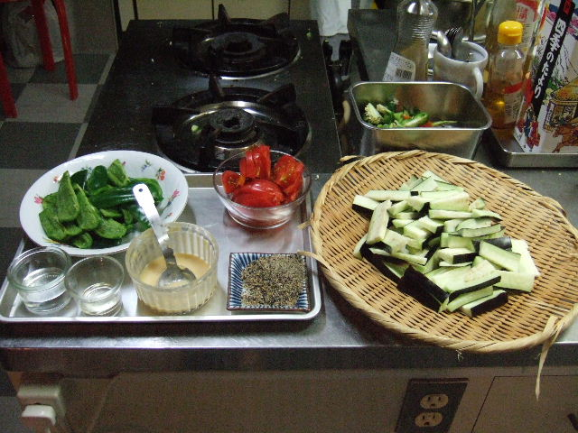 | ||||||||
| ３． 豆腐のハンバーグ ジャポネソース添え | ||||||||
薬膳食品「ぎんなん」を入れたハンバーグです。 豆腐と豚のももひき肉に、椎茸などいろいろな具を入れてあります。 ジャポネソースをかけて食べます。おいしいです！ |
|
|||||||
| ４． 茄子の忘れ煮 | ||||||||
茄子を、ヘタをつけたまま、茶せん切りにして煮ます。 かつおだしが、茄子のうまみを引き立てています。 |
|
|||||||
| ５． キュウリのチャーハン | ||||||||
キュウリは、温めて食べると、キュウリの水分が腸で吸収、血液に 運ばれ、汗を吸収します。 ニンニクと小エビを合わせて炒めたあっさり味の上品なチャーハンです。 |
|
|||||||
 |
||||||||
|
||||||||
| 7月 初夏の和風料理 | ||||||||
7月の料理は、煮干しだし汁を使った「けんちん汁」がメインです。 煮干しだし汁は、味噌汁、煮物、麺つゆ、鍋物等いろいろな料理に幅広く使えます。 かつおだし汁とは一味違ったおいしさです。
|
||||||||
| 出来上がり | 試食 | |||||||
１． 煮干しだし汁 |
||||||||
| 煮干しを丁寧に下ごしらえし、炒ってから粉にして手作りの煮干しの粉を作ります。 煮干し出汁は、この煮干しの粉に、こんぶ、干ししいたけを合わせて仕上げます。 |
||||||||
１ー２． けんちん汁 |
||||||||
|
|
「煮干し出し汁」を使った感動の一品！”けんちん汁”です。
ごぼう、れんこん、大根、人参、こんにゃく、出し汁に使った干し椎茸などを順番に炒め、里芋を加え、豆腐をくずし入れて仕上げた栄養満点の料理です。 |
|
||||||
| ２−１ 初夏のおかず その１ ぷるピリこんにゃく煮 | ||||||||
暑気払いにぴったりなおばんざい。初夏のおかず3品！ そのうちの１品が、ぷるピリこんにゃく煮です。 赤唐辛子のピリ辛が、初夏のビールにとてもよく合います。 |
|
|||||||
| ２−２ 初夏のあかず その２ 炒り豆腐 | ||||||||
 |
重石で固め、荒くつぶして茹でた豆腐を、干し椎茸とにんじんの煮含めを加えて作ったおかずです。 溶き卵を加え、からからになるまで煮上げるのがコツです。
|
|
||||||
| ２−３ 初夏のおかず その３ いわしの生姜煮 | ||||||||
いわしの苦手な人でも、きっとファンになることでしょう！ 魚の下処理をしっかりすることがまず基本です。 後は、調味をしてじっくり煮れば出来上がりです。 こちらは、大吟醸の冷酒がお似合いです。 |
|
|||||||
３． 甘味 桃のコンポート |
||||||||
手軽に出来る桃のコンポートです。 ４年前の教室で学んだ「中華スイーツ 桃のコンポート」を思い出しました。あの時の味も忘れられません。 |
|
|||||||
| 6月 西洋料理 | ||||||||
今月は、イサキ、キャベツ、じゃがいも、能古島の紅甘夏かんなど旬の材料をふんだんに使った栄養バランスの良いおいしい西洋料理です。 |
||||||||
| １．魚の香草焼 バルサミコソース添え | ||||||||
旬のイサキに香草を詰めて、オーブンで2度焼きした味は絶品です。 香草がちょっと苦手な人でも安心しておいしく食べられます。 バルサミコソースも良く合います！
|
|
|||||||
| ２．キャベツとベーコンのスープ | ||||||||
新鮮なキャベツのうまみを、トマトとベーコンで引き立たせたおいしいスープです。 材料を同じ大きさにそろえて、やさしく炒めるのがコツです。、
|
|
|||||||
| ３．新じゃが揚げ炒め | ||||||||
新じゃが（今回は男爵を使用）の角切りを、炒めた玉ねぎ、椎茸、ベーコンで合わせて仕上げます。すべて2cm角に切りそろえた材料が仕上がりの美しさを助けます。 ワインの隠し味も、うまさを引き立てています。 いくらでも食べられそうなやさしい味です。 |
|
|||||||
| ４．クレープとマーマレード | ||||||||
能古島名物の紅甘夏かんを使ったマーマレードです。きれいに焼き上げたクレープに包んで食べます。紅茶に入れたり、パンに塗ったりしていろいろな食べ方ができます。 |
||||||||
| 以下は前回までのメニューです | ||||||||
| 5月の中華料理 | ||||||||
| 今月は、3月に引き続き本格派中華料理です。 | ||||||||
| 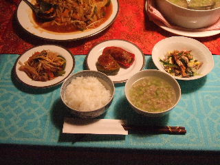 | ||||||||
中華風テーブルセッティングと旬の材料を使った色とりどりの中華料理の出来上がりです。 |
||||||||
| １．アスパラガスのスープ | ||||||||
鶏がらスープとアスパラガスの相性が抜群です。 さっぱりした上品な味です。 |
|
|||||||
| ２．麻辣ソースのあえもの | ||||||||
麻辣ソースのピリ辛がたまりません。 紹興酒のお供に是非どうぞ！ |
|
|||||||
| ３．ピーマンの肉詰め | ||||||||
ピーマンと豚ミンチを中心に味の脇役が活躍しています。 丸ごとかぶりついて食べてください。 |
|
|||||||
４．五目炒め煮 |
||||||||
| 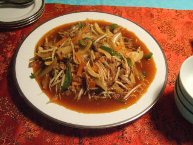 | 炒める順番を間違えないようにしましょう。 きっとおいしい”炒め煮”ができます。 |
|
||||||
| 4月 春の一汁三菜 | ||||||||
| 4月の料理は、旬のたけのこを使った春の一汁三菜です。くるみ盆に盛り付けたおいしい和食です。 | ||||||||
| 写真は、左がセッティング、右が出来上がりです。 | ||||||||
| １．筍ごはん | ||||||||
旬の筍をおいしく炊きあげます。 だしと隠し味の材料が利いています。 木の芽を散らして出来上がり！ |
||||||||
| ２．春の吸い物 | ||||||||
筍とわかめの吸い物です。 やはり昆布とかつおの一番だしが決め手です。 |
||||||||
| ３．菜の花の塩漬け | ||||||||
| 塩味だけのほのかな菜の花の香りが素敵です。 | ||||||||
| ４．まぐろのづけ | ||||||||
赤身のまぐろをたれに漬け込み、長芋とオクラとあわせて食べます。 日本酒が良く合うちょっと贅沢で簡単にできる一品です。 |
||||||||
| ５．ごま豆腐 | ||||||||
とても手の込んだおいしいごま豆腐です。 短期は損気です。ゆっくりゆっくり気長に作りましょう。 |
||||||||
3月の中華味 （おいしい中華料理） |
||||||||
今月は、久しぶりの中華味です。 今話題の中国料理ですが、もちろん食材は純国産です。
|
||||||||
 |
||||||||
テーブルセッティング |
出来上がり | |||||||
| １．餃子 | ||||||||
| 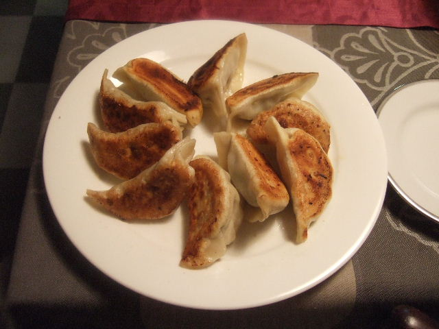 | 手作り餃子です。皮ももちろん手作りです。 具の作り方、皮の作り方、皮の包み方、そして焼き方を、順序良くレッスンしました。 これで冷凍餃子などは、もう必要ありません！ |
|
||||||
| ２．アサリと春雨と大根のスープ | ||||||||
|
こんなおいしい中華風スープがあるのですね。 鶏がらスープ１００％で作った具たくさんのアサリのスープです。 大根と春雨との相性も抜群です。 |
|
||||||
| ３．イカとセロリの炒めもの | ||||||||
玄界灘で取れる甲イカを使った炒めもの。 セロリと一緒に炒める比較的簡単な料理です。 あっさりした上品な味で、セロリの苦手な人も、もしかしたら、好きになるかも・・・・・。 |
|
|||||||
| ４．杏仁豆腐 | ||||||||
杏仁豆腐のイメージが変わりました。 一度試食してみたらその違いがわかります。 |
|
|||||||
| 2月の料理 | ||||||||
 |
||||||||
| 2月の料理の出来上がりです | テーブルセッティングのレクチャー | |||||||
| １．スペシャルロールキャベツ | ||||||||
ロールキャベツの一般的な材料を使いますが、そのボリューム 感と、ナイフを入れた瞬間の“驚きと感動”は絶品です。 トマトホールを煮つめたソース、トッピングのホワイトソース・パプ リカ・パセリ、そして添え物のブロッコリーのコンビネーションが とても良い、素敵な味のスペシャルロールキャベツです。 |
|
|||||||
| ２．サワークラフト | ||||||||
キャベツの残りを細切りにして炒めるだけの簡単な料理ですが キャラウェーシードのほのかな香りがきいています。 くせになりそうな素敵な味覚です。お酒のお供に・・・・・ |
|
|||||||
| ３．りんごのピクルス | ||||||||
りんごは、皮のまま純正のりんご酢で 煮つめます。 ピクリングスパイス、シナモンスティックが隠し味です。 トーストしたフランスパンにサンドしてもおいしく食べられます。 |
|
|||||||
| ４．オールドファッションドーナッツ | ||||||||
| オーソドックスな材料で作った昔懐かしい味のドーナッツ。 |
|
|||||||
| 1月 スープを上手に | |||
| １．家庭のラーメン |
|||
|
|
とてもファミリーな素敵な味の味噌ラーメンです。☆ |
||
| 2．スペアリブの酢煮 | |||
|
フライパンで焼いて、おいしいタレでじっくり煮込んだスペアリブです。☆ |
|||
| ３．春菊の酢のもの | |||
|
春菊をゆがいて、手作りポン酢で食べます。 上に乗せた天盛のきざみ海苔が利いています。 ☆ |
|||
| 4．おにぎり | |||
|
ラーメン、スペアリブに合う炊き立てのおにぎりです。☆
|
|||
| 12月 クリスマス料理 | |||
| １．かれいのｸﾞﾘｰﾝソース |
|||
鶏がらスープで煮込んだかれいにほうれん草･クレソンを浮かしたｸﾞﾘｰﾝ ソースで食べます。 |
|||
| 2．人参のポタージュ | |||
 |
人参・ハムのみじん切りを入れたポタージュです。 ☆ | ||
| 3．サラダ | |||
 |
アンチョビソースで食べるサラダです。 レタスがとてもよく合います。 ☆ |
||
| 特1．クリスマス用フルーツケーキシュトレン | |||
 |
|||
| クリスマスまでに少しづつ食べるドイツ風シュトレンです | |||
11月 おいしいブランチ |
|||
| １．きのこのリゾット |
|||
 |
きのこをふんだんに使ったリゾットです。
時間がかかりますが、絶品です。☆ |
||
| 2．ソーセージパテ | |||
豚ひき肉で作るソーセージパテ。 ペッパー、フェンネルシード、パプリカが利いた 簡単ななかわいい料理です。☆ |
|||
| 3．キャラメルりんごのチーズケーキ | |||
| 煮つめたりんごを入れたチーズケーキです。 | |||
| ☆テーブルセッティング | ☆試食会 | ||
| 特別料理 | ||
| ◆お正月用おせち料理 （2007年12月30〜31日） | |||
| １．一の膳 | |||
黒豆 紅白かまぼこ ごまめ とりの松風焼 栗きんとん |
|||
| ２．二の膳 | |||
えびの酒煮 サーモンの昆布巻 求肥昆布 かずのこ いくら |
|||
| ３．三の膳 | |||
煮〆 鰤の南蛮漬け 菊花蕪 |
|||
| ☆レッスン風景と出来上がり作品 | |||
 |
|||
| 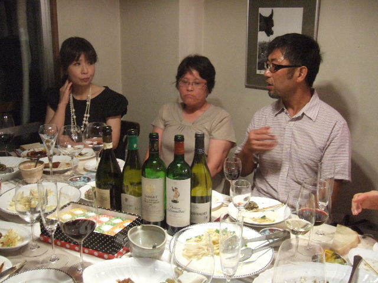 | |||